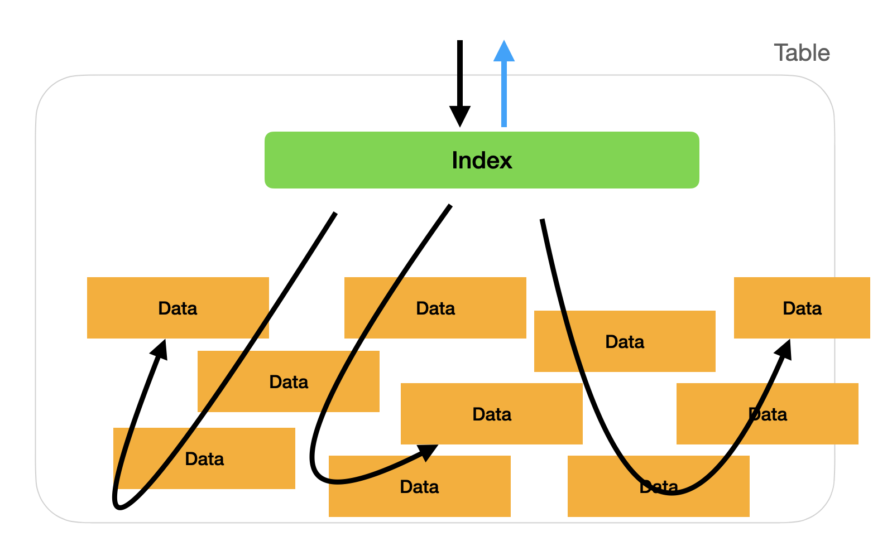
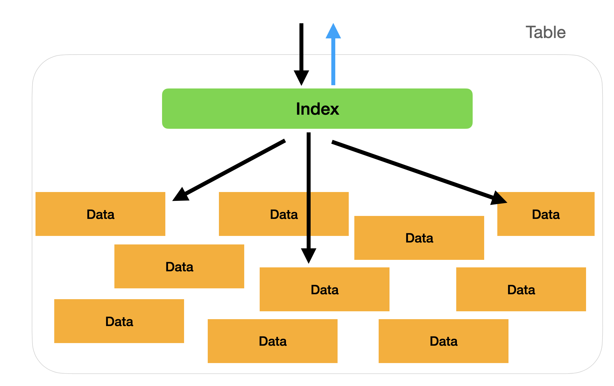

Индекс очень ценен на практике, а также является популярной областью вопросов на собеседованиях. Индекс отвечает за оптимизацию производительности базы данных, поэтому правильное использование индекса может помочь существенно повысить производительность базы данных и улучшить качество обслуживания пользователей.
Таким образом, индекс является очень важной частью технологии для повседневной работы в области баз данных.
Основная концепция технологии индексирования заключается в том, чтобы пометить определенные столбцы в таблице и извлечь их для дополнительного и организованного хранения. Когда выполняется оператор SQL, вы можете напрямую искать данные на основе этих индексов.
Предполагая, что индексы не установлены, SQL, возможно, придется обойти всю таблицу, чтобы найти данные. Ниже приведены два изображения, демонстрирующие различия в работе запроса с индексом и без него:
Без ИНДЕКСА: на индексном уровне индекс не найден, поэтому для получения данных может использоваться множество избыточных путей запроса.

С индексом: если на индексном уровне найден индекс и он содержит информацию, относящуюся к вашему запросу, вы можете напрямую узнать, какие данные следует получить, не отвлекаясь.

Однако индекс эффективен не во всех ситуациях, в основном, когда данные превышают 100 000 записей в одной таблице, пользователь постепенно почувствует разницу в производительности. Или в транзакции или функции с огромным количеством операторов SQL разница в производительности снова будет заметна пользователю.
Использование индекса не является панацеей. Есть один существенный недостаток, о котором нам следует знать.
Если предположить, что в нашей таблице будут выполняться высокочастотные действия по записи данных, это приведет к тому, что база данных будет часто создавать индекс для таблицы, что требует времени на операцию.
Поэтому, предполагая, что таблица имеет такие характеристики, рекомендуется провести тщательную оценку и пойти на компромисс, чтобы избежать дилеммы, заключающейся в том, что скорость запроса на 1 секунду выше, а вставка новых данных — на 2 секунды медленнее.
Синтаксис добавления индекса очень прост и похож на синтаксис добавления FOREIGN KEY:
Первая строка обозначает таблицу, в которую нужно добавить индекс, а вторая строка запускает код индекса. name_index — это имя индекса, а name — это индексируемый столбец.
Приведенный выше пример кода также можно записать в другом формате с точно такой же функциональностью:
Если вы хотите удалить индекс, синтаксис еще проще: вам даже не нужно создавать столбец, просто укажите имя индекса с помощью ключевого слова DROP:
Существует много категорий индекса, если мы не укажем его, в MySQL по умолчанию будет установлена категория INDEX. Помимо INDEX, мы представим три наиболее часто используемые категории.
Мы уже знакомы с PRIMARY KEY (который мы будем называть ПК). В главе 1-2 «Структура данных SQL: таблица» мы узнали, что она представляет собой уникальный ключ таблицы и не может повторяться. В этой главе мы также оставили в качестве предзнаменования упомянуть, что PK очень важен для эффективности поиска данных. Причина будет раскрыта в этом разделе.
При настройке ПК для базы данных также создается индекс, а в качестве категории индекса используется PRIMARY KEY. Преимущество использования этой категории заключается в том, что когда мы используем JOIN для объединения двух таблиц, это эффективно увеличивает скорость обработки.
Возможно, вы заметили, что при объединении обычно происходит соединение id с id. В это время вступит в силу индекс ПК, который обеспечивает чрезвычайно высокую скорость. Поэтому при использовании JOIN старайтесь соединяться с PK, чтобы обеспечить скорость выполнения!
Использование UNIQUE INDEX похоже на настройку уникальности столбца, которую мы изучали ранее, и часто создается вместе. После использования UNIQUE INDEX будет создано ограничение, позволяющее хранить в столбце только уникальные значения, избегать дублирования и повышать эффективность использования индекса.
Также обратите внимание, что PRIMARY KEY — это одна из категорий UNIQUE INDEX.
FULL TEXT — это индекс, специально разработанный для поиска по ключевым словам. Если вы хотите создать приложение, связанное с поисковой системой по ключевым словам, у вас будет возможность использовать полнотекстовый индекс.
В частности, не все языки поддерживают полнотекстовые индексы, и необходимо проверять поддерживаемые языки каждого программного обеспечения базы данных.
При использовании индекса мы рекомендуем освоить эти шесть принципов, чтобы индекс мог играть качественную
роль в нашем коде.
1. Попробуйте выбрать UNIQUE INDEX, в противном случае используйте KEY.
2. Добавьте
индекс для столбца, на который часто ссылаются сложные операции, например GROUP BY.
3. Проиндексируйте
столбец активной области, который часто запрашивается в WHERE, но убедитесь, что различия в
значениях
столбца достаточно велики. Например, добавление индекса в столбец identify_number лучше, чем
добавление индекса в столбец country_of_birth.
4. Индекс фактически использует дисковое пространство,
поэтому обратите внимание на используемое пространство на жестком диске.
5. Проиндексируйте столбец с
небольшим значением. Например, индексный title статьи лучше, чем индексный content
статьи.
6.
Старайтесь избегать индексирования столбцов с NULL, что может повлиять на эффективность запроса.
Выше приведен синтаксис индекса и 6 основных принципов, которые необходимо освоить. Надеюсь, это поможет вам более правильно использовать индекс!